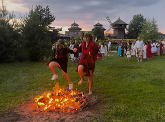

Ивана Купала
Ивана Купала. Ночь, полная волшебства и огня. Прыжки через костёр, бесконечные хороводы и гадания на суженых. Здесь оживают древние обряды, а духи природы становятся ближе. Плетение венков, поиск цветущего папоротника, очищение водой и пламенем. Здесь переплетаются язычество и христианство, а мистика становится реальностью. Мы отправимся в путешествие в старинный город Суздаль, где этот праздник до сих пор отмечается.


предыстория праздника
Ивана Купала — это не просто летний праздник, это отголосок далёких времён, когда наши предки поклонялись солнцу, воде и силе плодородия. Этот мистический праздник, переживший века и слившийся с христианскими традициями, до сих пор манит нас своими обрядами и загадками.
Когда-то славяне делили год на две половины — светлую и тёмную. И летнее солнцестояние, пик расцвета природы, было важной точкой отсчёта. С приходом христианства древний праздник трансформировался в Иванов день, связанный с Рождеством Иоанна Крестителя, и сместился на 7 июля по новому стилю
Что же означает это загадочное слово «Купала»? Одни видят в нём связь с индоевропейским корнем, означающим «кипеть, страстно желать». Другие трактуют его как «костёр», «водоём» или даже «место праздничных гуляний». Но все сходятся в одном: Купала — это союз огня и воды, двух стихий, дарующих жизнь и очищение.
В купальскую ночь происходят чудеса:
- Волшебная роса: считается, что роса, собранная в ночь с 6 на 7 июля, обладает магическими свойствами. Умойтесь ею, и красота и здоровье будут сопутствовать вам весь год.
- Очищающие костры: прыжки через купальский костер — это не просто забава, а ритуал очищения. Чем выше прыжок, тем счастливее будет год!
- Гадания на судьбу: девушки пускают по воде венки, гадая о замужестве и судьбе. Чей венок утонет — к беде, а чей уплывет далеко — к счастливому будущему.
Защита от нечисти и воров:
В купальскую ночь все растения набирают особую силу. Наши предки собирали травы, колючие растения для защиты дома от дурного глаза, заготавливали веники для бани. Считалось, что цветы иван-да-марьи, разложенные по углам дома, отпугнут воров, создавая иллюзию разговора хозяев.

мое путешествие
Меня всегда манили ритуалы и мистика Ивана Купалы, поэтому я загорелась идеей отметить этот праздник по-настоящему. Поиски аутентичного и недорогого организатора заняли немало времени, но в итоге мой выбор пал на Суздаль — город, где время словно остановилось.
Признаюсь, я ожидала увидеть обычный туристический город, но Суздаль превзошёл все мои ожидания. Никаких современных зданий, только стилизация под Древнюю Русь. Живописные храмы, цветущие улочки, чистейшая природа и неспешно плывущие по реке лодки в старорусском стиле — это было не просто путешествие, а погружение в прошлое России.
Вход на празднование «Ивана Купалы» стоил вполне демократично — 3500 рублей. Самым сложным оказалось найти бюджетное жильё, но мне повезло снять комнату в частном доме напротив Щурова городища, где и проходило основное действо. Чтобы полностью погрузиться в атмосферу, я даже арендовала платье в древнерусском стиле!
Организаторы продумали всё до мелочей.
Щурово Городище: живая история
Место проведения праздника — настоящая находка! Щурово Городище — это музей живой истории, реконструкция славянского поселения X–XI веков. Расположенный на территории гостинично-туристического комплекса «Горячие Ключи», он словно переносит тебя на тысячу лет назад. На территории праздника — мини-зоопарки с милыми хаски, поросятами, коровами, курами и даже оленями.
Здесь же можно увидеть огороды, цветущие луга и послушать живую музыку — то балалайку, то гармонь.
Мужское и женское: развлечения для всех Программа началась с разделения на «мужские» и «женские» дела. Девушкам предложили плести венки из огромного количества цветов, создавая атмосферу настоящего сестринства. Под звуки атмосферных песен в исполнении фолк-группы «Крапива» мы создавали свои шедевры. В это время мужчины ковали украшения, метали топоры, стреляли из лука и соревновались в других состязаниях. После завершения «венковой» церемонии девушки тоже могли принять участие в мужских забавах. Я, например, выковала кольцо с красивым орнаментом. И самое приятное – все эти активности входили в стоимость билета!
Хороводы, игры и пляски: полное отключение от реальности После разделения на «кланы» мы водили хороводы под старинные песни, играли в забавные игры, предназначенные как для пар, так и для друзей. На мгновение все забыли о телефонах и погрузились в волну энергии и любви к людям, природе и своим корням. Ни секунды не было скучно! Меня порадовало, что на празднике было много молодёжи. Никто не стеснялся петь во весь голос, играть и бегать. Атмосфера была невероятно дружелюбной и раскрепощённой. Конечно, не обошлось и без фуд-корта: шашлык, пирожки, морсы, настойки и другие угощения по вполне приемлемым ценам.
После игр мы, словно единый поток, двинулись к озеру, сплетаясь в огромную живую линию. Голоса сливались в мелодичные напевы, а на поляне нас ждало мистическое зрелище: мы встали в тесный круг, обнявшись, покачиваясь в такт древней песне. В центре уже пылал костер, но в воздухе витала тревога — надвигались дождевые тучи. Прыжок через костёр — это не просто забава, а шанс сбросить с себя груз негатива,накопившийся за год, а прыжок вдвоём — клятва верности и силы любви. Глубокий вдох, разбег, мгновение полёта над огненной стихией и… облегчение, восторг! Казалось, можно прыгать вечно, заряжаясь энергией костра.
Ливень обрушился в самый ответственный момент, когда пришло время опускать венки со свечами в воду, шепча заветные желания. Промокшие, но не сломленные, мы все же отправили свои мечты в плавание по озеру, надеясь, что они достигнут небес.
И тут произошло чудо, затмившее даже непогоду. Прямо на наших глазах, в этой пропитанной магией атмосфере, двое молодых людей соединили свои судьбы. Романтическое предложение руки и сердца стало кульминацией купальской ночи. И в тот момент я подумала: «Вот это да! Ивана Купало и правда соединяет судьбы